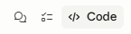
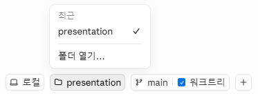
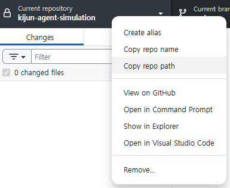

클로드 데스크톱
Code 모드 세팅 가이드
새로 업데이트된 Claude Desktop의 Code 기능을 활용하여 개발 환경을 구축하는 방법
◆ 오늘의 안내 순서
✦ 두 개의 모드, 하나의 앱
클로드 데스크톱은 Chat과 Code, 두 가지 모드를 제공합니다
Chat 모드 기존
- 일반 대화 및 질의응답
- 아티팩트(코드/문서) 생성
- 프로젝트 기반 대화 관리
- 파일을 직접 수정하지 않음
Code 모드 NEW
- 로컬 프로젝트 폴더에 직접 접근
- 파일 생성, 수정, 삭제 가능
- 터미널 명령어 실행
- 스킬(/) 명령어 시스템 지원
핵심 차이: Chat 모드는 대화 중심, Code 모드는 실행 중심입니다. Code 모드에서는 Claude가 여러분의 컴퓨터에서 직접 코드를 작성하고 실행합니다.
⊕ Code 모드 핵심 기능
터미널 없이도 AI와 함께 개발하는 새로운 방법
로컬 프로젝트 폴더를 열고, Claude에게 작업을 지시하면 자동으로 코드를 작성합니다
1M 컨텍스트
파일 읽기/쓰기
프로젝트 폴더의 파일을 직접 생성하고 수정합니다
터미널 실행
npm, git 등 CLI 명령어를 자동 실행합니다
스킬 시스템
/ 명령어로 특화된 워크플로우를 실행합니다
✦ Code 모드 진입하기
-
1
클로드 데스크톱 앱 실행
Claude Desktop 앱을 실행합니다
-
2
상단 탭에서
</> Code클릭좌측 상단의 Chat 옆에
</> Code탭이 있습니다 -
3
Code 모드 화면 확인
사용 통계 대시보드와 새 세션 버튼이 표시됩니다
Code 탭이 보이지 않으면 앱을 최신 버전으로 업데이트하세요

✦ 프로젝트 폴더 열기
Code 모드에서 작업할 폴더를 연결합니다
-
1
폴더 열기...버튼 클릭Code 모드 메인 화면에서 폴더 열기를 선택합니다
-
2
로컬또는폴더 선택...클릭하단의 버튼으로 프로젝트 디렉토리를 지정합니다. 최근 열었던 프로젝트는 목록에서 바로 선택할 수 있습니다.
-
3
작업 시작
폴더가 연결되면 입력창에 작업을 설명하세요
권한 안내: Claude가 폴더 접근 권한을 요청하면 허용을 눌러주세요. 선택한 폴더 내에서만 파일을 읽고 수정합니다.

✦ 작업 폴더 경로 찾기
프로젝트 폴더 경로를 모르겠다면 GitHub Desktop에서 확인하세요
-
1
GitHub Desktop 실행
작업할 레포지토리를 선택합니다
-
2
레포지토리 이름 우클릭
상단 Current repository 영역을 우클릭합니다
-
3
Copy repo path또는Show in Explorer경로를 클립보드에 복사하거나, 탐색기에서 해당 폴더를 바로 엽니다
복사한 경로를 Claude Desktop의 폴더 선택 대화상자 주소창에 붙여넣으면 바로 이동됩니다

✦ 작업 지시하기
자연어로 원하는 작업을 설명하면 Claude가 실행합니다
화면 하단의 "작업을 설명하거나 질문하세요" 입력창에 작성합니다
우측 하단에 사용 중인 모델(Opus 4.6 1M)이 표시됩니다
"이 폴더에 React 프로젝트를 만들어줘"
"index.html 파일을 수정해서 다크모드를 추가해줘"
Claude의 작업 과정
파일 읽기 → 수정 계획 수립 → 코드 작성/수정 → 테스트 실행 → 결과 보고
각 단계에서 권한 요청이 있을 수 있으며, 허용/거부를 선택할 수 있습니다
✦ 스킬(/) 명령어 활용
입력창에 /를 입력하면 사용 가능한 스킬 목록이 표시됩니다
특정 작업에 최적화된 워크플로우를 한 번에 실행하는 명령어 시스템
입력창에 /presentation-builder처럼 슬래시 명령어를 입력하면 해당 스킬이 자동 실행됩니다
/commit
Git 커밋 메시지를 자동 생성하고 커밋합니다
/presentation-builder
수업 발표 자료 HTML을 자동 생성합니다
/review-pr
코드 리뷰를 자동으로 수행합니다
커스텀 스킬
.claude/ 폴더에 SKILL.md를 추가하여 나만의 스킬을 만들 수 있습니다
✦ 효과적인 사용 팁
CLAUDE.md 파일 활용
프로젝트 루트에 CLAUDE.md를 만들면 Claude가 매 세션마다 이 파일을 읽고 프로젝트 컨텍스트를 파악합니다
구체적으로 지시하기
"버그 고쳐줘"보다 "login.js의 인증 토큰 만료 처리 로직을 수정해줘"가 더 좋은 결과를 냅니다
권한 요청 확인하기
파일 수정이나 터미널 명령 실행 전 반드시 권한을 요청합니다. 의도치 않은 변경을 방지할 수 있습니다
Git과 함께 사용하기
작업 전 Git 커밋을 해두면 Claude의 변경사항을 언제든 되돌릴 수 있어 안전합니다
편집 수락 기능으로 Claude가 제안하는 변경사항을 한 줄씩 검토하고 승인할 수 있습니다. 하단의 편집 수락 버튼을 확인하세요.
이제 Code 모드로
개발을 시작하세요
궁금한 점이 있으시면 언제든 질문해 주세요
오늘의 핵심
- 상단
</> Code탭을 클릭하여 Code 모드로 전환 폴더 열기로 작업할 프로젝트 디렉토리를 연결- 자연어로 원하는 작업을 설명하면 Claude가 자동 실행
/명령어로 스킬을 활용하여 효율적으로 작업- CLAUDE.md 파일로 프로젝트 컨텍스트를 지속적으로 관리